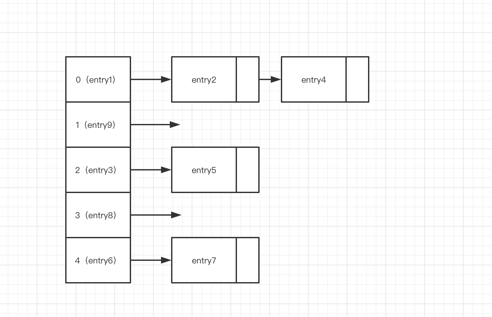
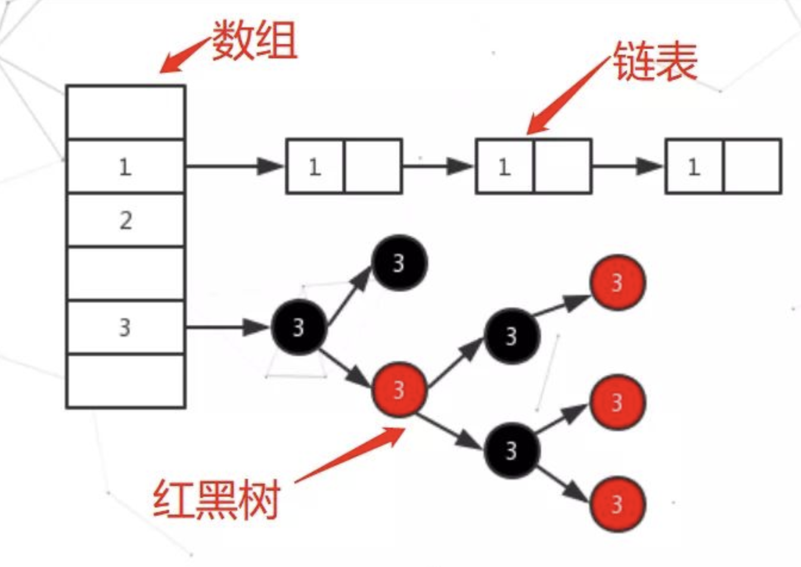

了解hash碰撞需要先知道，HashMap 的存储方式，hash是由链表和数组为结构的底层实现，HashMap中主要是通过key的hashCode来计算hash值的，只要hashCode相同，计算出来的hash值就一样。如果存储的对象对多了，就有可能不同的对象所算出来的hash值是相同的，这就出现了所谓的hash冲突.

java1.7时存储如上图所示，但是在1.8时候就变成了红黑树存储。

那我们就需要知道以下几个问题：
1.为什么需要变成树结构？
2.为什么是红黑树？
3.什么时候转换成红黑树？什么时候又会变回链表？
1.为什么变成树结构？
在1.7时候，如果是链表的情况下，在大量元素中会生成一个长长的链表，大家都知道链表的查找时间是O(n),这样大大增加查找时间。
2.为什么是红黑树？
针对这种情况，JDK1.8中引入了红黑树来优化这个问题，为什么不引入二叉查找树呢？因为二叉查找树的一般操作的执行时间为O(lgn)，但是二叉查找树若退化成了一棵具有n个结点的线性链后，则这些操作最坏情况运行时间为O(n)。与单链表一样。
所以此时我们需要红黑树它在二叉查找树的基础上增加了着色和相关的性质(红黑树的自平衡，后期会详细讲)使得红黑树相对平衡，从而保证了红黑树的查找、插入、删除的时间复杂度最坏为O(log n)。
数据库为什么选择B+树索引？HashMap为什么选择红黑树索引？
这个问题的答案是因为磁盘。数据库的查询是位于磁盘，读取到数据之后存储到索引结构中。HashMap是位于内存中。而磁盘和内存的数据读取有很大差异，磁盘每次读取的最小单位是一簇，他可以是2、4、8、16、32或64个扇区的数据。而内存我们可以按照位来读取。
这种情况下我们在数据库中使用红黑树，建立的索引可能会庞大到无法想象，而在HashMap中使用B+树，对于HashMap频繁的插入操作，B+树无疑是要频繁进行修改的。实际应用中，若搜索的次数远远大于插入和删除，那么选择AVL，如果搜索，插入删除次数几乎差不多，应该选择RB。
3.什么时候转换成红黑树？什么时候又会变回链表？
8的时候转换为红黑树，6的时候退转回链表
为什么不直接使用红黑树，而是要先使用链表实在不行再转红黑树呢？
答案自然要在源码和注释里找：在HashMap类中第174行左右有描述：
Because
TreeNodes are about twice the size of regular nodes, we use them only when bins contain enough nodes to warrant
use (see TREEIFY_THRESHOLD)
因为树节点的大小是链表节点大小的两倍，所以只有在容器中包含足够的节点保证使用才用它”，显然尽管转为树使得查找的速度更快，但是在节点数比较小的时候，此时对于红黑树来说内存上的劣势会超过查找等操作的优势，自然使用链表更加好，但是在节点数比较多的时候，综合考虑，红黑树比链表要好。
为什么是8，而不是9不是10？看源码的描述：
Because TreeNodes are about twice the size of regular nodes, we
* use them only when bins contain enough nodes to warrant use
* (see TREEIFY_THRESHOLD). And when they become too small (due to
* removal or resizing) they are converted back to plain bins. In
* usages with well-distributed user hashCodes, tree bins are
* rarely used. Ideally, under random hashCodes, the frequency of
* nodes in bins follows a Poisson distribution
* (http://en.wikipedia.org/wiki/Poisson_distribution) with a
* parameter of about 0.5 on average for the default resizing
* threshold of 0.75, although with a large variance because of
* resizing granularity. Ignoring variance, the expected
* occurrences of list size k are (exp(-0.5) * pow(0.5, k) /
* factorial(k)). The first values are:
*
* 0: 0.60653066
* 1: 0.30326533
* 2: 0.07581633
* 3: 0.01263606
* 4: 0.00157952
* 5: 0.00015795
* 6: 0.00001316
* 7: 0.00000094
* 8: 0.00000006
* more: less than 1 in ten million
理想情况下，在随机哈希码下，哈希表中节点的频率遵循泊松分布，而根据统计，忽略方差，列表长度为K的期望出现的次数是以上的结果，可以看到其实在为8的时候概率就已经很小了，再往后调整并没有很大意义。
当hashCode离散性很好的时候，树型bin用到的概率非常小，因为数据均匀分布在每个bin中，几乎不会有bin中链表长度会达到阈值。但是在随机hashCode下，离散性可能会变差，然而JDK又不能阻止用户实现这种不好的hash算法，因此就可能导致不均匀的数据分布。不过理想情况下随机hashCode算法下所有bin中节点的分布频率会遵循泊松分布，我们可以看到，一个bin中链表长度达到8个元素的概率为0.00000006，几乎是不可能事件。所以，之所以选择8，不是拍拍屁股决定的，而是根据概率统计决定的。由此可见，发展30年的Java每一项改动和优化都是非常严谨和科学的。
我等采石之人，当心怀大教堂之愿景！欢迎关注我的公众号！！